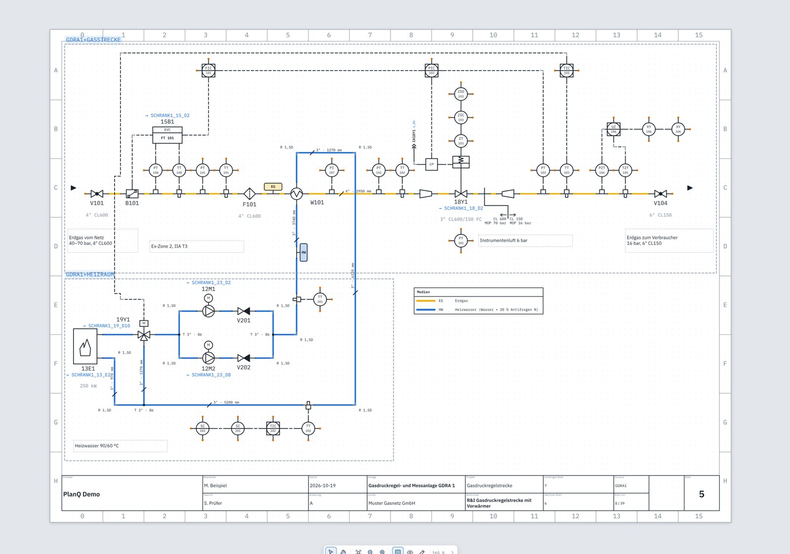
01 · R&I
Verfahren festlegen
Rohrleitungen, Armaturen und PLT-Stellen zeichnen. Druckstufe, Medium und Rohrdaten stehen direkt im Fließbild.
PlanQ zeichnet R&I-Fließbilder, Schaltpläne und den Schrankaufbau in einem Projekt und erzeugt daraus das SPS-Programm. Was du im Plan änderst, siehst du im 3D-Schrank, in den Listen und später auf dem Tablet in der Werkstatt, auf der Baustelle und bei der Inbetriebnahme.
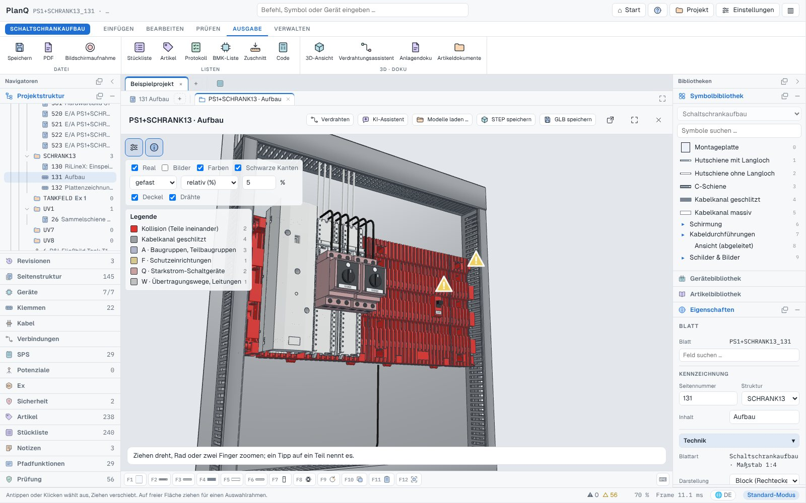
Du fängst dort an, wo dein Projekt anfängt. Oft ist das das R&I, manchmal eine Stückliste vom Kunden. PlanQ führt dich von dort über SPS, Werkstatt und Baustelle bis zur Inbetriebnahme und Übergabe an den Betreiber.

Rohrleitungen, Armaturen und PLT-Stellen zeichnen. Druckstufe, Medium und Rohrdaten stehen direkt im Fließbild.
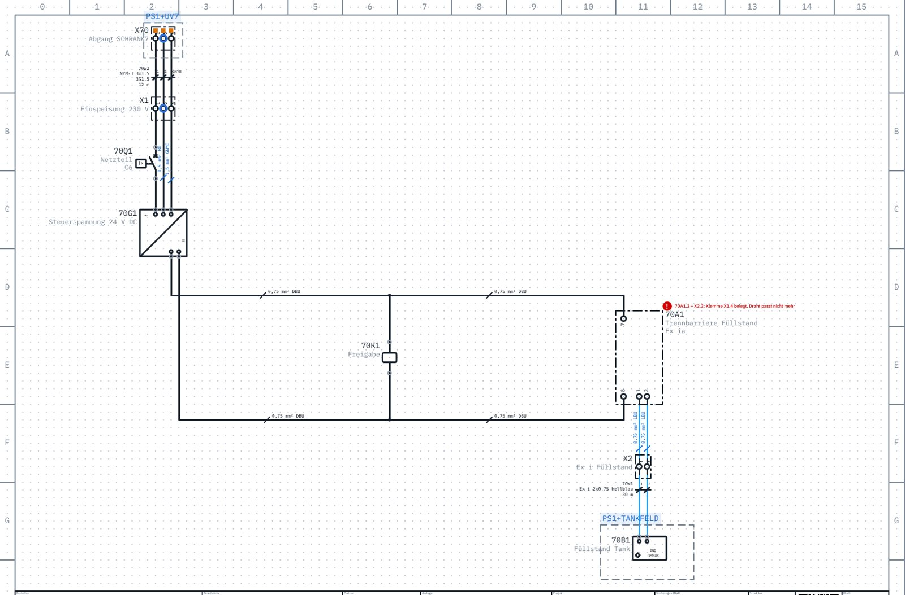
Aus den PLT-Stellen werden Geräte im Schaltplan. Symbole, Artikel, Klemmen und Kabel hängen zusammen.
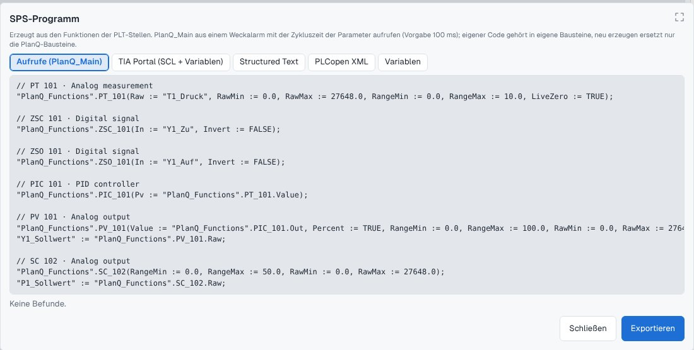
Aus R&I und Schaltplan entstehen Rackbild, Variablen und SPS-Programm. Ausgabe für TIA Portal, Structured Text oder PLCopen.
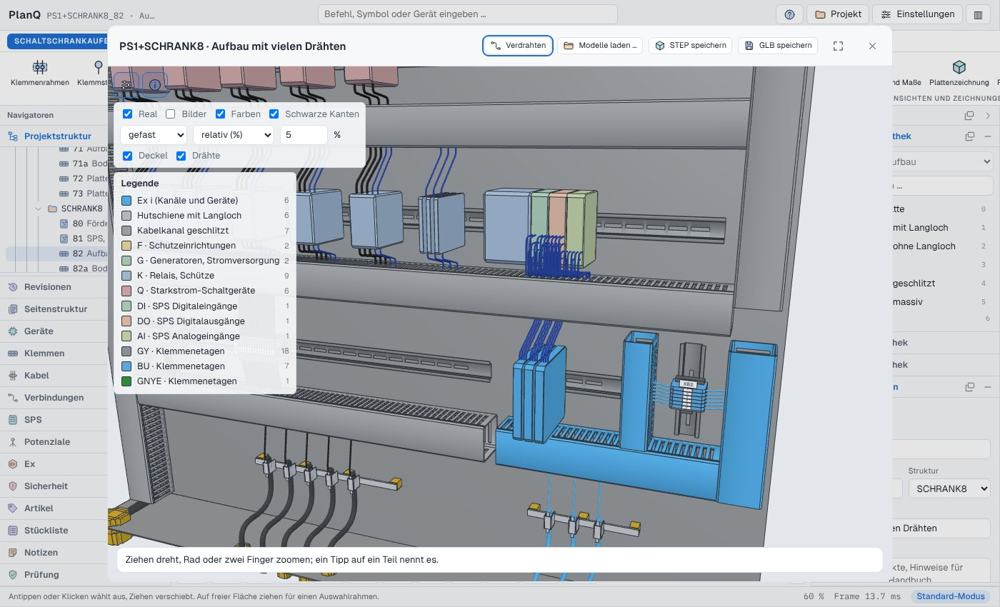
Geräte auf Platte und Tür setzen, in 2D oder 3D. Kanäle, Schienen und Drahtwege rechnet PlanQ mit.
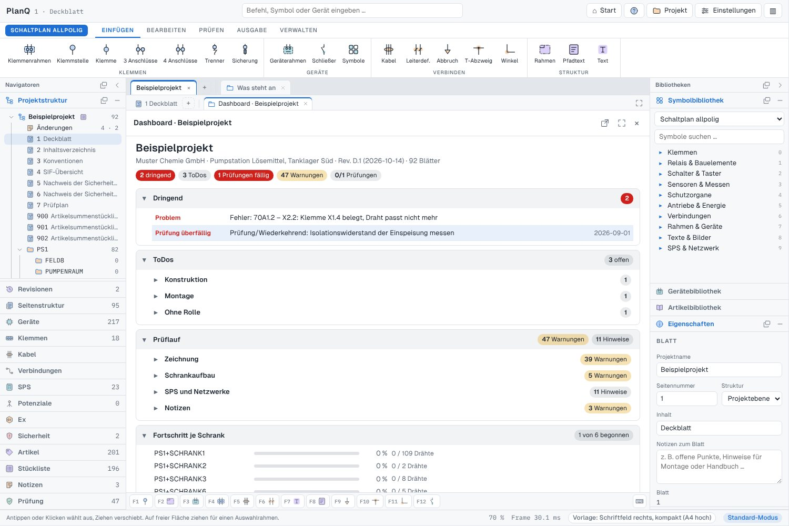
Der Prüflauf zeigt doppelt belegte Klemmen, fehlende Artikel und Ex-Verstöße. Mit Revision und Freigabe.
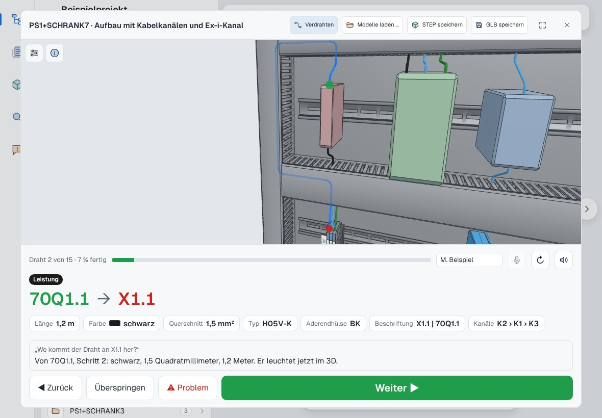
In der Werkstatt und auf der Baustelle zeigt das Tablet jeden Draht in 3D, mit Länge, Farbe, Querschnitt und Aderendhülse.
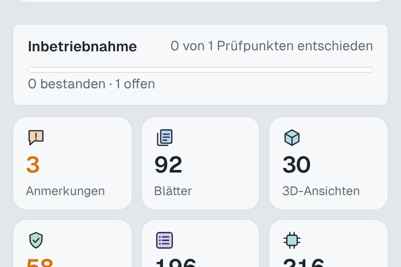
Das Inbetriebnahmeprotokoll führt durch die Prüfpunkte. Du hakst sie vor Ort ab, Probleme gehen direkt an die Konstruktion.
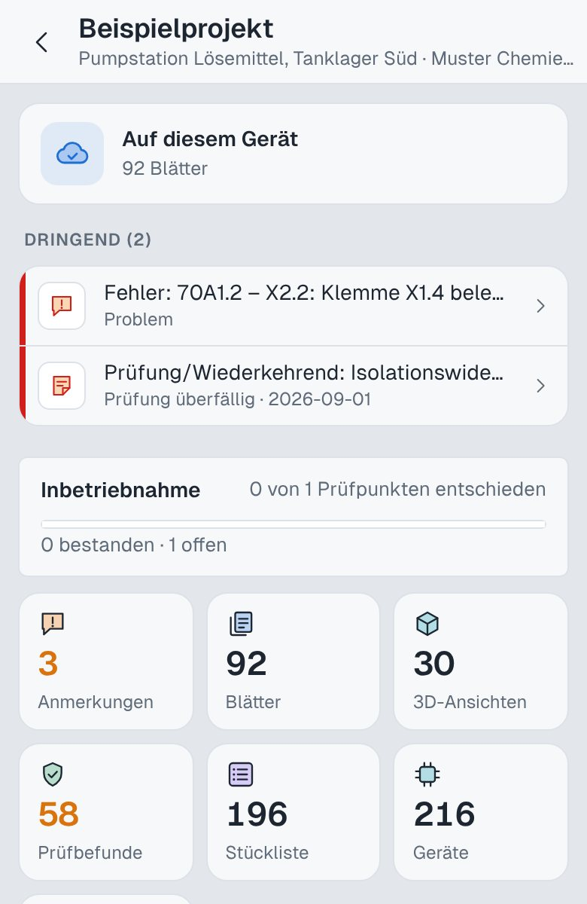
Auf der Anlage hast du Pläne, offene Punkte und Prüffristen auf dem Handy dabei. Auch ohne Netz.
Ein Gerät gibt es in PlanQ nur einmal, egal auf wie vielen Blättern es auftaucht. Darum passt der Klemmenplan immer zum Schaltplan, und der 3D-Schrank immer zum Klemmenplan.
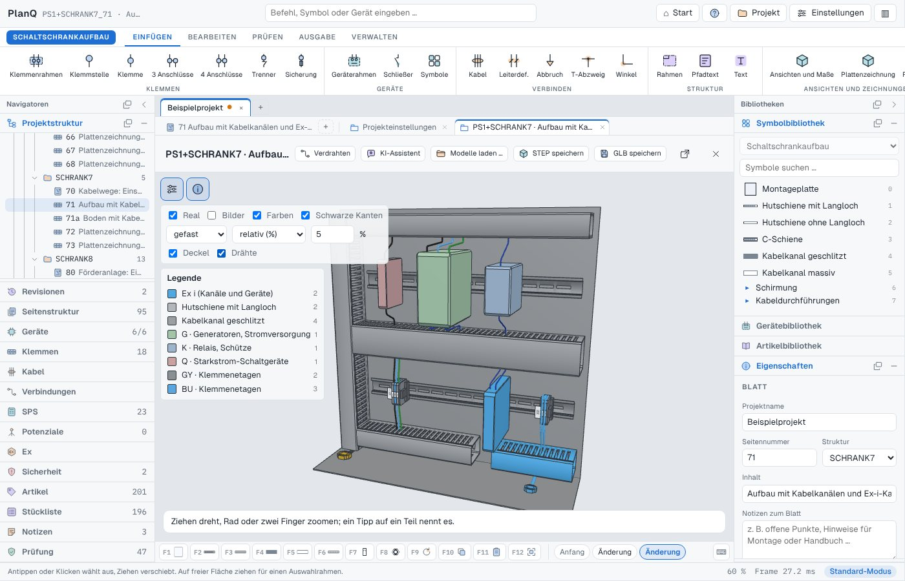
Der Verdrahtungsassistent führt durch den Schrank. Er zeigt, welcher Draht als Nächstes dran ist, und leuchtet ihn im 3D-Modell auf. Wer ein Problem findet, meldet es mit einem Tipp, und es landet beim Konstrukteur.
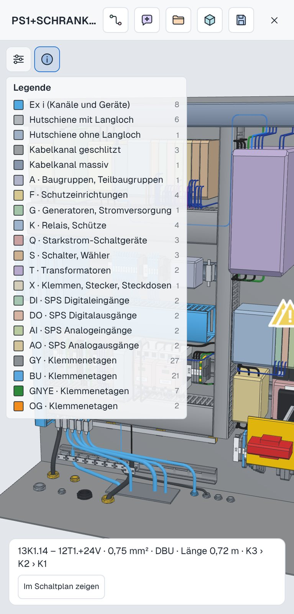
Der KI-Assistent kennt dein Projekt. Er öffnet Blätter, erklärt Prüfbefunde und ändert Geräte, wenn du ihn darum bittest. Jede Änderung siehst du vorher und kannst sie zurücknehmen.
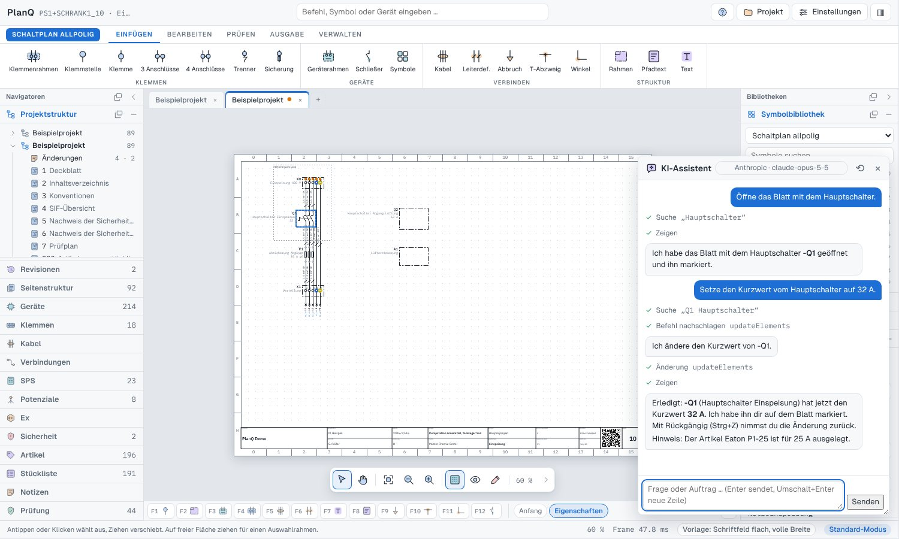
Ein paar Dinge, die man erst schätzt, wenn man sie einmal hatte.
Grafisch, mit Brücken und Kabeln, immer passend zum Schaltplan.
Siemens S7 und WAGO, mit Ein- und Ausgängen direkt aus dem Schaltplan.
Ex-i-Nachweis, SIL und PL mit Übergabe an SISTEMA zum Nachrechnen.
Kabel, Sicherungen, Verschraubungen und Kanäle mit Verfügbarkeitstabelle.
Änderungen nachvollziehen, freigeben und als Entwurf kennzeichnen.
Plansprache je Projekt, Übersetzung mit Fachwörterbuch.
Zuschnittlisten für Kabel, Schienen und Kanäle, Einkaufsliste mit Preisen.
Herstellermodelle einlesen, den Schrank als STEP oder GLB ausgeben.
Beide Projekte sind in der App enthalten. Du kannst sie öffnen und alles darin ausprobieren.
Vom R&I über die Rohrleitung in 3D bis zum Schaltschrank mit Umrichtern.
92 Blätter, mehrere Schränke, Ex-i-Kreise und Verdrahtung in 3D.
Im Browser öffnen, Beispielprojekt laden, loslegen. Keine Anmeldung nötig.